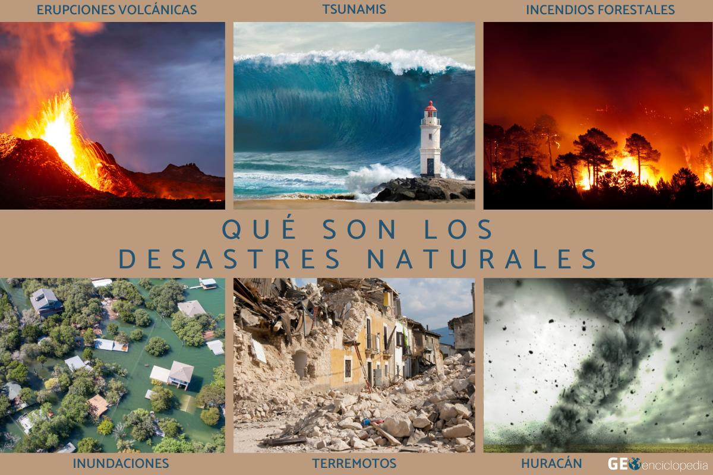

¿Qué es un Desastre Natural?
Un desastre natural es un evento o fenómeno que ocurre en la naturaleza y que puede causar daños significativos a la vida, la propiedad y el medio ambiente.
Tipos de Desastres Naturales
Los desastres naturales se clasifican en varias categorías principales. En nuestro curso, nos centraremos en los más relevantes para nuestra región.
- Geológicos: Incluyen sismos, erupciones volcánicas y tsunamis. Son eventos que se originan en el interior de la Tierra.
- Hidrometeorológicos: Son fenómenos atmosféricos o hídricos como huracanes, inundaciones, sequías y tormentas.
- Biológicos: Se refieren a eventos como pandemias o plagas que afectan a la salud humana o la agricultura.
Importancia de la Preparación
Estar informados y preparados es nuestra mejor defensa. El conocimiento no solo nos permite actuar de manera segura durante una emergencia, sino que también nos ayuda a construir comunidades más resilientes.